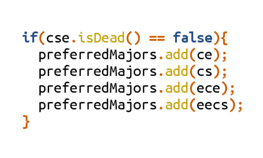

Bilgisayar mühendisliği öldü mü?
March 16, 2013 Bilgisayar mühendisliğini tercih etmeyi düşünen bir lise öğrencisiyseniz danışman hocalarınız, akrabalarınız, ailenizin arkadaşları, tanıdıklarınızın tanıdıkları ve internette tanımadığınız birçok kişi bilgisayar mühendisliğinin önemini kaybettiği gerekçesiyle daha geçerli bölümleri tercih etmenizi önerebileceklerdir. Bu yazımda bilgisayar mühendisliğine meraklı gençleri ilgi duymadıkları başka alanlara yönlendirmeye çalışan bir takım insanların kullandıkları argümanları ele alacağım.
“Artık herkes bilgisayardan anlıyor, bilgisayar mühendisi olmak için üniversite okumaya gerek yok.”
Bu sorunun asıl sebebi insanların bilgisayar mühendislerinin ne iş yaptığını bilmemesinden kaynaklanıyor. Bilgisayar mühendisini bilgisayar tamir eden, format atan, yazılımlarını güncelleyen bir teknik eleman olarak gören insanların sayısı hala azımsanamayacak kadar fazla. Bilgisayar mühendisliği çok geniş bir alan olduğu için “bilgisayar mühendisi ne iş yapar” konusuna burada değinmeyeceğim. Benim çalışmalarımı görmek isterseniz “Çalışmalarım” sayfasını inceleyebilirsiniz.
Burada vurgulamak istediğim nokta, bilgisayar mühendisliği mezunu olmayanların bu alanda yetkinlik kazanamayacağı değil. Bu alandaki kaynakların çoğuna biraz İngilizcesi olan herkes kolaylıkla ulaşabilir. Ancak bilgisayar mühendisliğinin bilgisayar programcılığı ile aynı olmadığını da belirtmek isterim. Bu noktada bilgisayar mühendisliği ders programlarının gereksiz derslerle dolu olduğu ve temel dersler yerine programlama dersleri konması gerektiği görüşüne de en azından kısmen katılmıyorum. Gereksiz olduğunu düşündüğünüz bir ders (örn lineer cebir) daha sonra ilgi duyacağınız başka bir alan için (örn bilgisayar grafiği) temel oluşturabilir. Temel düzeydeki bir ders analitik düşünme yeteneğinizi geliştirecek ve ileriki çalışmalarınıza doğrudan veya dolaylı olarak katkı sağlayacaktır. Ayrıca hedefiniz büyük şirketler (örn Google, Microsoft, Facebook) ise veri yapıları, işletim sistemleri ve ayrık matematik gibi temel düzeydeki konuları tekrar gözden geçirmek mülakatlarda avantaj sağlayacaktır.
“Bilgisayar mühendisleri aç ve işsiz”
Bilgisayar mühendislerinin iş bulamadıkları, çok düşük ücretlerle çalıştıkları ve sonunda internet kafe açarak hayatlarını kazanmaya çalıştıkları yönünde birçok söylenti var. Birincisi, internet kafe açan bilgisayar mühendisine henüz hiç rastlamadım. İşsizlik konusunda ise arkadaşlarımın çoğu mezun olmadan yarı zamanlı çalışmaya başlamışlardı, 3-4 aydan fazla iş arayıp da bulamayanı görmedim. Ayrıca bilgisayar mühendisliği uluslararası bir meslek ve bütün dünyada iş imkanı var. Bilgisayar mühendisliği ve yakın alanlar (elektrik-elektronik müh., yazılım müh., bilgisayar bilimleri) küresel bir popülariteye sahip. Gözlemlediğim kadarıyla Amerika’da bilgisayar mühendisliğinin en prestijli üç meslekten biri olduğunu söyleyebilirim.
“Bilgisayar mühendislerinin imza yetkisi yok, diplomaları karın doyurmuyor”
Evet, karın doyuracak olan bilgisayar mühendisliği diploması değil, diplomayı alana kadar aldığınız eğitimin size kattıklarıdır. Bilgisayar mühendisliği, öğrenmeyi sevmeyi gerektiren bir meslek. Kendini geliştirme amacında olmayan, dört yıl okuyayım sonra ömür boyu imza atarak veya diplomamı kiralayarak para kazanayım diye düşünen biri için bilgisayar mühendisliğinin oldukça yanlış bir tercih olduğu doğru.
“Bilgisayar mühendisinin yapacağı işi elektrik-elektronik mühendisleri de yapabiliyor”
“Yazılım mühendisliği bilgisayar mühendisliğini bitirecek”
Burada temel yanılgı sanırım bu bölümler arasında yüksek duvarlar olduğunun düşünülmesi. Bu bölümlerin kesişiminde yer alan oldukça fazla alan var. Örneğin sayısal işaret işleme hem elektrik-elektronik hem de bilgisayar mühendisliğinde çalışılabilecek bir konu. Hatta Amerika’daki üniversitelerde bilgisayar mühendisliği bölümleri çoğu zaman “Elektrik ve Bilgisayar Mühendisliği” veya “Elektrik Mühendisliği ve Bilgisayar Bilimleri” olarak adlandırılıyor. Bir elektronik mühendisi bir bilgisayar mühendisinin işini ne kadar yapabiliyorsa, bilgisayar mühendisi de elektronik mühendisinin işini o kadar yapabilir. Yazılım mühendisliği ise daha çok bilgisayar mühendisliğinin yazılım geliştirme odaklı bir dalı. Yazılım mühendisliğini bilgisayar mühendisliğine rakip olarak görmek aynı bölüm içerisindeki farklı anabilim dallarını birbirine rakip olarak görmekten çok farklı değil. Özetle, biraz literatür taraması yaptıktan ve bir kaç projede çalıştıktan sonra bir alandan diğerine yönelmek mümkün.
Peki, bilgisayar mühendisliğinde okuyan herkes bölümünden memnun mu? Hayır, maalesef değil. Bilgisayar mühendisliği birçok kişi için ideal tercih olabileceği gibi bölüme ilgisi olmayalar için çok yanlış bir tercih olabilir. Daha doğru tercihler yapabilmek için bölümlerin ders programlarına bakmak ve derslerin ilgi duyulan alanlar ile ne derece örtüştüğünü değerlendirmek faydalı olabilir.
Siz bu konuda düşünüyorsunuz? Bölümünüzden memnun musunuz? Deneyim ve düşünlerinizi yorum olarak paylaşarak içeriğe katkıda bulunabilirsiniz.
Bilgisayar mühendisliği, En çok okunan yazılar